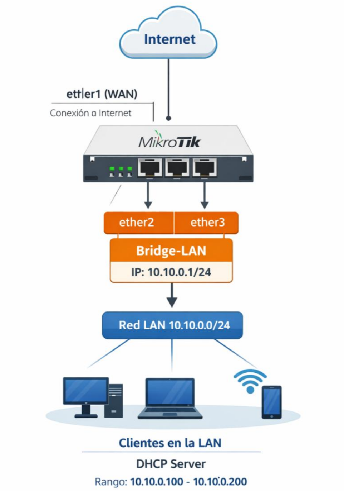
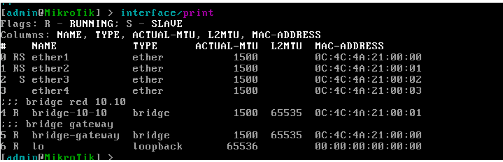
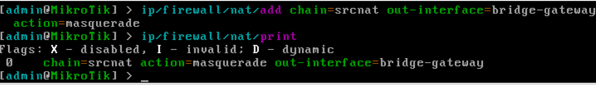
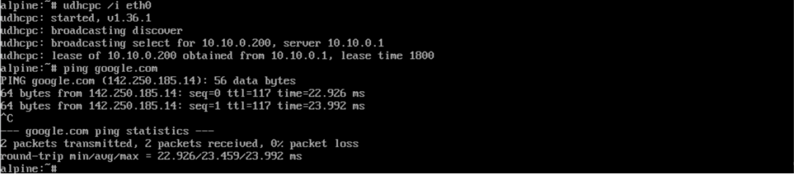
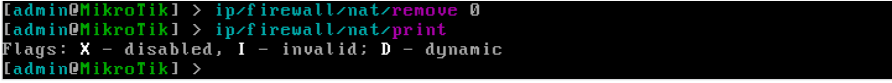

Configuración de NAT.
Índice
Introducción
Escenario a configurar
Configuración de NAT con masquerade
Comprobación de la configuración aplicada
Eliminando la configuración aplicada
Anexo: Combinaciones frecuentes de parámetros en NAT de salida
Introducción
En este documento se explica la creación y configuración de NAT (Network Address Translation) en RouterOS, una función clave que permite a los dispositivos de una red local acceder a otras redes, como Internet, utilizando una única dirección IP pública.
Escenario a configurar.
Como escenario de partida, se reutiliza la configuración establecida en el documento “AF10 - Configuración de DHCP Server sobre bridge, de manera manual”, donde contamos con un bridge LAN con IP 10.10.0.1/24 y clientes conectados.

A lo largo de esta guía se mostrará cómo implementar NAT mediante masquerade, asociando la salida de la red 10.10 a la interfaz ether1. Esto permitirá que todos los clientes de la red local puedan navegar por Internet correctamente, mientras se mantiene la gestión centralizada y segura de la traducción de direcciones.
Para este tutorial se propone reutilizar el escenario propuesto en el documento anterior, de modo que podamos centrarnos exclusivamente en el uso del asistente de RouterOS para la creación del servicio DHCP.
La configuración de la interfaz ether1, encargada de proporcionar la conexión a la red WAN, no se abordará en este documento, ya que fue tratada en detalle en los tutoriales de la semana pasada.
Del mismo modo, no se explicará la creación del bridge que agrupa las interfaces ether2 y ether3, ni la asignación de la dirección IP al bridge, ni la configuración del servicio DHCP asociado al bridge, puesto que estos aspectos ya han sido desarrollados y validados en el documento anterior.
Configuración de NAT con masquerade
Para permitir que los dispositivos de la red local accedan a Internet utilizando la dirección IP del router, configuraremos NAT mediante masquerade en RouterOS. Este tipo de NAT es ideal para redes domésticas o pequeñas oficinas, ya que adapta dinámicamente la traducción de direcciones a la IP de salida de la interfaz WAN.
Antes de crear la regla de NAT, debemos identificar la interfaz que conecta el router a Internet. En nuestro escenario, esta interfaz es el bridge gateway, que ya tiene conectividad a la red WAN y una IP asignada dinámicamente.
Para comprobar el listado de interfaces, ejecutamos el comando:
interface/print
En la siguiente captura podemos observar la interfaz bridge-gateway, sobre la que aplicaremos las reglas NAT.

Con la interfaz WAN identificada, creamos la regla de masquerade que permitirá que todo el tráfico saliente desde la LAN se traduzca correctamente:
ip/firewall/nat/add chain=srcnat
out-interface=bridge-gateway action=masquerade

Donde:- chain=srcnat: indica que la regla se aplica al tráfico saliente desde la LAN hacia otra red.
- out-interface=bridge-gateway: especifica la interfaz de salida, es decir, la WAN.
-
action=masquerade: realiza la traducción de direcciones de forma dinámica, adaptándose automáticamente a la IP pública de la interfaz.
-
Todo el tráfico de redes internas podrá salir a internet utilizando la interfaz bridge-gateway, debido a que no se ha añadido a la regla un filtro de dirección de origen
Comprobación de la configuración aplicada
Una vez creada la regla de NAT, es importante verificar que los clientes de la red local pueden acceder correctamente a Internet.
En nuestro escenario, utilizaremos un cliente Alpine Linux conectado al bridge LAN (red 10.10.0.0/24) para realizar la prueba. Los pasos son los siguientes:
- Abrir la consola del cliente Alpine Linux.
- Comprobar la resolución de nombres y la conectividad a Internet ejecutando un ping hacia un dominio público, por ejemplo:
ping google.com

Observar los resultados:- Si el cliente recibe respuestas, significa que el NAT está funcionando correctamente y que el servidor DHCP ha proporcionado correctamente la información de gateway y DNS.
-
Si el ping falla, conviene revisar que:
-
La interfaz WAN del router está activa y tiene conectividad.
- La regla de NAT está habilitada y correctamente asociada a la interfaz WAN (ether1).
- El cliente ha recibido IP, gateway y DNS correctos desde el DHCP Server.
Con esta verificación, aseguramos que el tráfico de la red 10.10 se enruta hacia Internet a través del router y que el NAT está operando según lo esperado.
Eliminando la configuración aplicada.
Antes de iniciar un nuevo laboratorio o escenario, es fundamental eliminar correctamente todas las configuraciones previas. Esto evita conflictos, errores difíciles de diagnosticar y asegura que el router queda limpio para nuevas prácticas.
En este caso, comenzaremos retirando las reglas de NAT creadas para la red 10.10.
Para identificar las reglas aplicadas en el router, ejecutamos:
ip/firewall/nat/print
Podemos eliminar la regla utilizando su índice tal como aparece en la lista:
ip/firewall/nat/remove 0

Esto elimina la regla que permitía la salida de la red 10.10 hacia Internet. Para asegurarnos de que la regla se ha eliminado correctamente, ejecutamos nuevamente:ip/firewall/nat/print
La regla de masquerade no debería aparecer en la lista.
El resto de configuraciones aplicadas al escenario (IP en el bridge, pool de DHCP, leases, etc.) se deben eliminar siguiendo los procedimientos descritos en los documentos anteriores sobre DHCP y configuración de bridges.
Anexo: Combinaciones frecuentes de parámetros en NAT de salida
Cuando configuramos NAT de salida en RouterOS, normalmente utilizamos combinaciones de chain, src-address, out-interface y action para adaptar la traducción de direcciones al escenario de red. Casos más comunes:
- Masquerade para todas la LAN: traduce todas las IPs salientes de cualquier red interna que pase por la WAN (bridge-gateway)
ip/firewall/nat/add chain=srcnat out-interface=bridge-gateway action=masquerade comment="NAT general"
- Masquerade solo para una red interna específica: limita la traducción únicamente al tráfico proveniente de la red 10.10.0.0/24
ip/firewall/nat/add chain=srcnat
src-address=10.10.0.0/24 out-interface=bridge-gateway
action=masquerade comment="NAT red 10.10"
- Masquerade solo para una interfaz de red interna específica: limita la traducción únicamente al tráfico proveniente de la interfaz bridge-10-10
ip/firewall/nat/add chain=srcnat
in-interface=bridge-10-10 out-interface=bridge-gateway
action=masquerade comment="NAT bridge 10.10"
- Source NAT a IP fija (src-nat): traduce todas las IPs internas a una IP pública específica en la WAN
ip/firewall/nat/add chain=srcnat
src-address=10.10.0.0/24 out-interface=bridge-gateway
action=src-nat to-addresses=200.50.60.100
comment="NAT a IP fija"